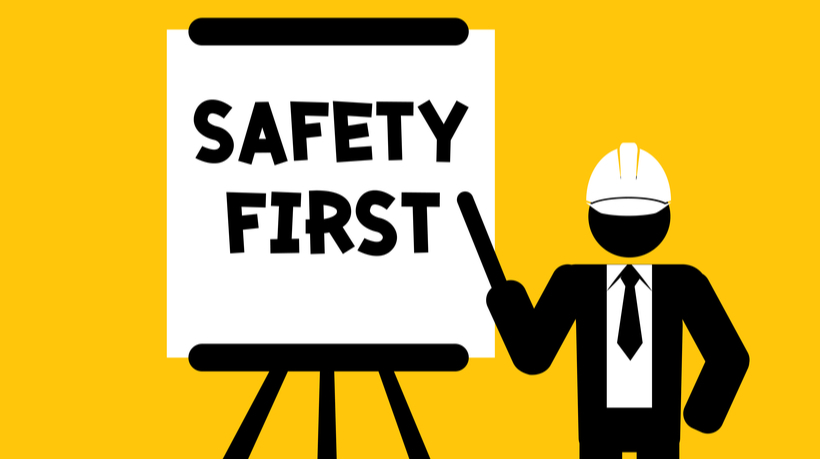

EP1000
What is this Website?
This website is my EP1000 website for documenting. We will be learning
Programming

3D Printing

Laser Cutting

These skills will be integrated into one to form a final project
ABOUT ME
This page is about me!
|
Name: Darryl Teoi |
Interests
I am interested in many things and how they work. My main hobbies are:
- Tinkering with Nerf.
- Gaming.
- Drumming
I am also interested in pursuing a career in the SAF.
All these skills are self-taught.
ASSIGNMENTS
Safety
Safety is number one priority when working in our laboratories and workshop. Document the main points, information that you need to take note of when working in SP Fablab, what are some of the key do’s and don’t’s that you need to take note of, what to do in case of emergencies.

Dresscode is an important part of safety as it minimises the chance of accidents happening or it plays a part of protecting oneself if an accident do happen.


Here are the safety symbols that you might see around the lab to warm us about the type of dangers of this particular area or machine.


In case of emergency, call:
-Ambulance/SCDF at 995
-Police at 999
To summarize, IMPORTANT points are mentioned below:
-You are RESPONSIBLE for the workplace safety on all stakeholders along lines of control at the workplace.
-Report ALL work related injuries(no matter how minor), promptly to technical support staff or supervising staff.
-Contact the school’s general office, 67721206 or call 67721234 when treatment to injury is required.
-Proper attire is a MUST(example, long pants, no slippers, tied hair and more)
Website Development
To start off with the web development, i have chosen Subliume Text 3 as my text editor among others such as Visual Studios and Notepad++ as it is relatively easy for beginners and also free to use.As version control, we had to use Github
This was my first and original About Me Page. At that time i was still unsure of how to add an image.
.png)
I have learnt that the naming of the images are really important for the code to recognise and a small difference in name will cause it to not show the image
CSS
-CSS is needed to create the design of a webpage and defines how a webpage will look like. It organises the information into different sections and gives it colors
Github
-Github allows for version control which means you can simply load back the previous version of saved codes without having to recode it. This allows for easy recovery if mistakes have been made or the code been accidently deleted.
Github also allows you to view what changes have been made to the previous version.
When you have finalised on all the changes, you can commit to main to upload the changes into the local repository.
.png)
Computer Aided Design
CAD allows us to design whatever we want and later through different methods such as 3D printing or laser cutting fabricate it into a physical object.
As for the software, we chose Fusion 360. Fusion 360 is rly similar to other CAD software that i have used in Year 1 and 2 such as Inventor thus it was relatively simple transitioning to it. It is really user friendly and simple to take your design from Fusion to 3D print and laser cut. Here are some exercises that i did. I used a template of the Knight chess piece and traced its outline. As for its circular base, i used the revolve feature.
.png)

Laser Cutting
Laser cutting uses a guided laser that vaporises material as it goes along. It cuts with extreme precision and speed. For us, wood and acrylic sheets are used to fabricate our projects. The image below shows hopw the CAD drawing is orientated to be sent for laser cutting.
.png)
The 3D shape of your design has to be laid out flat in order the be laser cut as the laser cutter only moves in a 2 dimensional plane. The thickness of the walls depends on the thickness of your material, which in my case was a 5mm thick wooden sheet
Imaages can also be engraved using the same laser cutter. The images below shows the fully assembled and engraved music box.
3D Printing and Modelling
3D Printing uses both Fusion 360 and Ultimaker Cura. The 3D printed object is printed layer by layer by the 3D printer which in our Fablab is the Ultimaker 2+. A 3D model is converted into STL file which is the sliced and converted into g-codes. The g-codes are then uploaded into the 3D printer. It is a relatively slow process but fast compared to tradional fabrication methods and its great for prototyping as it is cheap and you can tweak the design and simply print again. There are a few considerations when it comes to 3D printing.The layer height, wall thickness and infill. These factors contribute to the print time, strength, weight and finish of the printed part. The image below shows the 3D printed Knight chess piece.
There was some post processing involved as there were automatically generated supports for the overhang. I used a pair of pliers to break and remove the supports. As was relatively quick as it is a small piece. I then used files to smoothen some uneven edges left behind by the supports.
Electronics
I used Arduino.ide as the programming software to code for the arduino uno as it is a free and easy to navigate software.
.png)
We were also introduced some electronic devices such as switches, motion detector sensor, rotary encoder, LEDs, Neopixels, etc.
We were tasked to try some of these circuits.